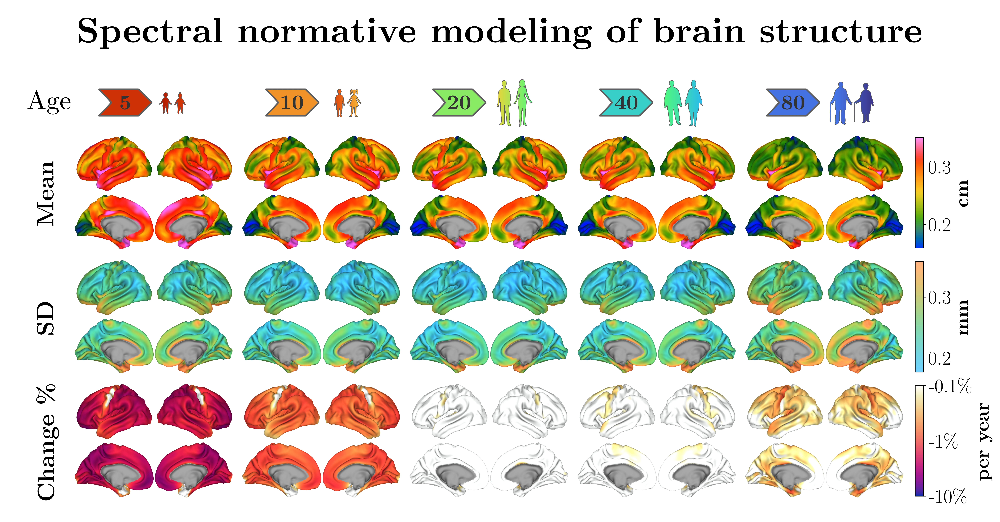

Spectral Normative Modeling of Brain Structure¶

This repository provides the complete, reproducible analysis code accompanying the manuscript:
Mansour L., S., et al. (2026). Spectral Normative Modeling of Brain Structure. medRxiv. DOI: 10.1101/2025.01.16.25320639
The study introduces Spectral Normative Models (SNMs) — a framework for normative modeling of high-dimensional cortical phenotypes using spectral (eigenmode-based) representations. The repository contains every step of the analysis pipeline, from raw data preprocessing through model fitting, performance evaluation, and clinical application, enabling full reproduction of all manuscript figures and results.
🧰 SpectraNorm Package¶
The analysis code in this repository is built on top of SpectraNorm — a dedicated Python package we developed to facilitate the implementation of conventional and spectral normative models.
pip install spectranorm --upgrade
For tutorials, API reference, and further documentation, visit the SpectraNorm documentation site.
🔁 Reproducibility Walkthrough¶
For a complete reproduction guide, including environment setup, runtime estimates, HPC requirements, and a figure-by-figure mapping from manuscript results to the notebook cells that produce them, see the provided Reproducibility Walkthrough.
📁 Repository Structure¶
The analysis is organized into 9 sequential stages, each corresponding to a directory of Jupyter notebooks:
1. Data Import Scripts¶
Imports and preprocesses cortical thickness data from several large-scale neuroimaging datasets, comprising over 78,000 healthy brains from 30 different datasets. Includes:
- Applying exclusion criteria to ensure data quality and consistency
- Processing cortical thickness maps and transforming them to fs_LR 32k surface space
- Preparing data for downstream analysis
2. Data Aggregation Scripts¶
Aggregates and prepares the cleaned data for normative modeling. Includes:
- Combining cleaned data from multiple datasets
- Final round of quality control
- Random train/test split for model validation
- Generating spectral coefficients of cortical thickness from vertex-wise data
3. Direct Normative Models¶
Specifies a direct normative modeling architecture as a backbone for the spectral model. Includes:
- Implementing a Hierarchical Bayesian Regression normative model (via PyMC)
- Fitting the model for a single variable (mean cortical thickness) as a function of age, sex, and site — used as a sanity check
- This architecture is reused in subsequent notebooks for both direct and spectral implementations
4. Spectral Basis Construction¶
Generates the spectral basis functions (connectome eigenmodes) used to encode high-resolution cortical phenotypes. Includes:
- Computing connectome-based brain eigenmodes via SVD of a random walk graph Laplacian shift operator
5. Spectral Normative Model Fitting¶
Fits the full Spectral Normative Model (SNM) using the spectral coefficients of cortical thickness. Includes:
- Fitting the Spectral Normative Model (SNM)
- Verifying the generation of normative ranges
- Saving the fitted model for subsequent evaluation
6. Performance Evaluations¶
Evaluates SNM performance and benchmarks it against the direct normative model. Includes:
- Evaluating accuracy across varying numbers of modes and spatial granularities
- Comparing SNM and direct model performance
- Reproducing comparative figures from the manuscript
7. Cortical Growth Gradients¶
Uses the fitted SNM to investigate cortical growth gradients across the lifespan. Includes:
- Mapping three distinct cortical growth gradients
- Comparing growth gradients to known cortical organization hierarchies
- Characterizing lifespan trajectories of change
8. Clinical (AD) Evaluations¶
Applies the fitted SNM to a clinical Alzheimer's Disease (AD) sample. Includes:
- Loading data from the MACC Harmonization dataset
- Fine-tuning the healthy SNM via normative adaptation (site harmonization)
- Mapping individual deviations from the normative model
- Characterizing the normative signature of AD-related cortical atrophy
- Assessing whether individual deviation patterns support discrete AD subtypes (clusterability analyses)
9. Data Sharing¶
Shares the data produced in this manuscript. Includes:
- A pretrained SNM for cortical thickness
- Normative brain charts for multiple cortical parcellations
🎨 Explore an interactive visualization of the pretrained SNM1000 vertex resolution charts
🗄️ Pretrained Model¶
The pretrained SNM1000 model is available as a release asset:

Download and decompress:
wget https://github.com/sina-mansour/normative_brain_charts/releases/download/v1.0/pretrained_SNM_1000_V1.0.tar.gz
tar -xzvf pretrained_SNM_1000_V1.0.tar.gz
Load the model in Python:
from spectranorm import snm
snm_1000 = snm.SpectralNormativeModel.load_model(
"/<path-to-extracted-directory>/pretrained_SNM_1000_V1.0/"
)
For usage examples, refer to the notebooks on growth gradients, clinical application, and data sharing, as well as the SpectraNorm tutorials.
📊 Provided Normative Charts¶
Parcellation Normative Charts¶
Using the pretrained SNM1000 model (trained on >78,000 healthy brains), we derived cortical thickness normative trajectories across 50 parcellation schemes covering 23,242 cortical regions in total. Charts are provided separately for males, females, and the combined sample.
Each item in the table below links to the associated CSV file included in the current release.
| Atlas | Combined | Female | Male |
|---|---|---|---|
Desikan-Killiany (aparc) |
📄 | 📄 | 📄 |
Destrieux (aparc.a2009s) |
📄 | 📄 | 📄 |
DKT (aparc.DKTatlas40) |
📄 | 📄 | 📄 |
| Von Economo-Koskinas | 📄 | 📄 | 📄 |
| Gordon 333 | 📄 | 📄 | 📄 |
| HCP MMP 1.0 (Glasser) | 📄 | 📄 | 📄 |
| Yeo 7 Networks (N1000) | 📄 | 📄 | 📄 |
| Yeo 7 Networks (split components) | 📄 | 📄 | 📄 |
| Yeo 17 Networks (N1000) | 📄 | 📄 | 📄 |
| Yeo 17 Networks (split components) | 📄 | 📄 | 📄 |
| Schaefer 100 (7 Networks) | 📄 | 📄 | 📄 |
| Schaefer 100 (17 Networks) | 📄 | 📄 | 📄 |
| Schaefer 200 (7 Networks) | 📄 | 📄 | 📄 |
| Schaefer 200 (17 Networks) | 📄 | 📄 | 📄 |
| Schaefer 300 (7 Networks) | 📄 | 📄 | 📄 |
| Schaefer 300 (17 Networks) | 📄 | 📄 | 📄 |
| Schaefer 400 (7 Networks) | 📄 | 📄 | 📄 |
| Schaefer 400 (17 Networks) | 📄 | 📄 | 📄 |
| Schaefer 500 (7 Networks) | 📄 | 📄 | 📄 |
| Schaefer 500 (17 Networks) | 📄 | 📄 | 📄 |
| Schaefer 600 (7 Networks) | 📄 | 📄 | 📄 |
| Schaefer 600 (17 Networks) | 📄 | 📄 | 📄 |
| Schaefer 700 (7 Networks) | 📄 | 📄 | 📄 |
| Schaefer 700 (17 Networks) | 📄 | 📄 | 📄 |
| Schaefer 800 (7 Networks) | 📄 | 📄 | 📄 |
| Schaefer 800 (17 Networks) | 📄 | 📄 | 📄 |
| Schaefer 900 (7 Networks) | 📄 | 📄 | 📄 |
| Schaefer 900 (17 Networks) | 📄 | 📄 | 📄 |
| Schaefer 1000 (7 Networks) | 📄 | 📄 | 📄 |
| Schaefer 1000 (17 Networks) | 📄 | 📄 | 📄 |
| Yan 100 (7 Networks) | 📄 | 📄 | 📄 |
| Yan 100 (17 Networks) | 📄 | 📄 | 📄 |
| Yan 200 (7 Networks) | 📄 | 📄 | 📄 |
| Yan 200 (17 Networks) | 📄 | 📄 | 📄 |
| Yan 300 (7 Networks) | 📄 | 📄 | 📄 |
| Yan 300 (17 Networks) | 📄 | 📄 | 📄 |
| Yan 400 (7 Networks) | 📄 | 📄 | 📄 |
| Yan 400 (17 Networks) | 📄 | 📄 | 📄 |
| Yan 500 (7 Networks) | 📄 | 📄 | 📄 |
| Yan 500 (17 Networks) | 📄 | 📄 | 📄 |
| Yan 600 (7 Networks) | 📄 | 📄 | 📄 |
| Yan 600 (17 Networks) | 📄 | 📄 | 📄 |
| Yan 700 (7 Networks) | 📄 | 📄 | 📄 |
| Yan 700 (17 Networks) | 📄 | 📄 | 📄 |
| Yan 800 (7 Networks) | 📄 | 📄 | 📄 |
| Yan 800 (17 Networks) | 📄 | 📄 | 📄 |
| Yan 900 (7 Networks) | 📄 | 📄 | 📄 |
| Yan 900 (17 Networks) | 📄 | 📄 | 📄 |
| Yan 1000 (7 Networks) | 📄 | 📄 | 📄 |
| Yan 1000 (17 Networks) | 📄 | 📄 | 📄 |
Vertex-Wise Normative Charts¶
In addition to the parcellation-based charts, we also provide normative trajectories at the full vertex resolution of the fs_LR 32k surface mesh (~32,000 vertices per hemisphere).
| Resolution | Combined | Female | Male |
|---|---|---|---|
Vertex-wise (fs_LR 32k) |
📄 | 📄 | 📄 |
These are stored as .joblib files and can be loaded directly into Python.
import joblib
# Load the normative trajectories
vertex_charts = joblib.load("/<path-to-file>/vertex-wise.fs_LR_32k.normative_trajectories.joblib")
🗺️ Cortical Maps¶
The cortical maps derived in this study are publicly available in the data/brainmaps/ directory. Each map is provided in both .dscalar.nii (CIFTI) and .npy (NumPy) formats.
| Map | CIFTI | NumPy |
|---|---|---|
| First Thickness Growth Gradient | 📄 | 📄 |
| Second Thickness Growth Gradient | 📄 | 📄 |
| Third Thickness Growth Gradient | 📄 | 📄 |
| Developmental Cortical Pruning | 📄 | 📄 |
| Aging Thickness Decline | 📄 | 📄 |
The .dscalar.nii files can be visualized directly in Connectome Workbench, while the .npy files can be loaded in Python via numpy.load().
📄 License¶
This repository is dual licensed:
- Non-commercial / Academic use: GNU AGPLv3
- Commercial use: A separate commercial license is required
See the LICENSE file for full details.
📬 Contact¶
If you have questions, encounter issues, or would like to collaborate, feel free to reach out: